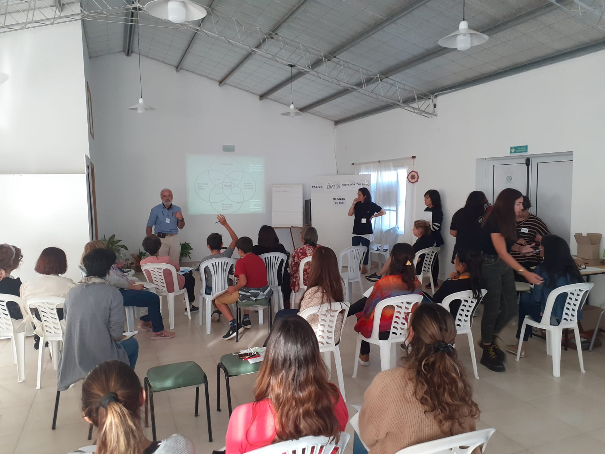
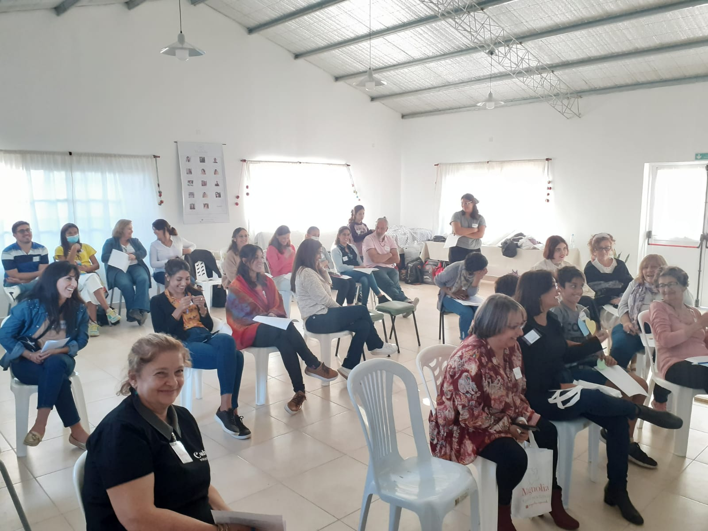
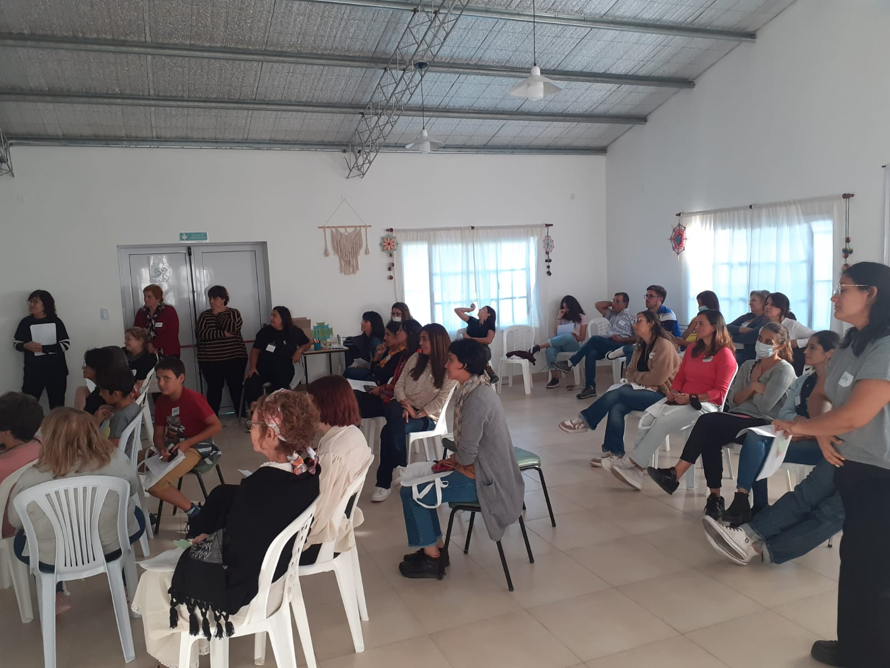

Qué hacemos
Diseñamos e implementamos talleres con diferentes dinámicas abordando algunas de las distinciones que el coaching propone, tales como Propósito, Observador, Heridas (duelo), Víctima-Protagonista, Declaraciones, Emociones, como así también otros de demanda específica. Las mismas son grupales, adaptadas por edades y necesidades según la institución u organización que nos convoque. No hacemos política partidaria ni coaching confesional, trabajamos desde la ética y valores democráticos. Las presentaciones/encuentros pueden abarcar media jornada, o jornada completa, en concordancia con la Institución/Organización requirente.
Misión
Brindar, a través del Coaching Ontológico, herramientas que nos permitan y permitan a otras/os reflexionar, observar, reconocer, y aprender con otros; en coherencia entre lo que pensamos, sentimos, decimos y hacemos.
Visión
Ser protagonista de la transformación social de la Argentina sembrando semillas de esperanza con una invitación constante a la transformación, por medio de proyectos institucionales que impactan en una mejora de la calidad de vida.
Fotos
- 
- 
- 